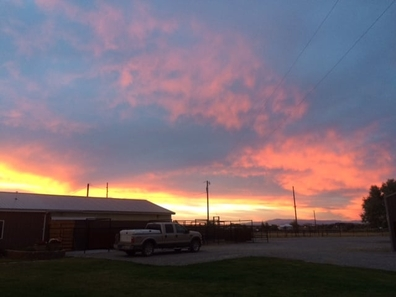
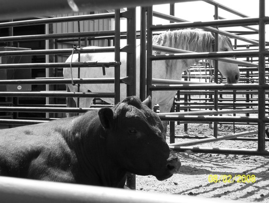
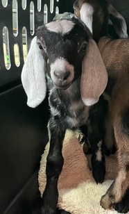
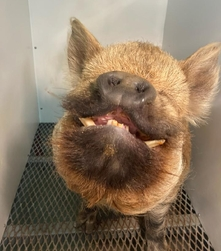

On-farm and in-clinic veterinary care for cattle, horses, pigs and goats — from herd health and calving to dentistry and emergencies, across the Gallatin Valley.
🚑 24-hour emergency service — we come to your operation when it counts.
Practical, experienced veterinary care tailored to working ranches, hobby farms, and everything in between.
Herd health programs, pregnancy checks, vaccinations, and calving assistance — in the chute or in the field.
Wellness exams, equine dentistry, lameness work, and emergency care for your horses.
Routine and preventive care for porcine and caprine patients, big and small.
Preventive programs that keep your whole herd productive and protected year-round.
Equine dentistry and teeth floating to keep your animals eating and working comfortably.
When something goes wrong after hours, we are on call and ready to come to you.

Chuteside Veterinary Service has cared for the livestock of southwest Montana for three decades. We know what your animals — and your livelihood — mean to you, and we bring straight talk and steady hands to every visit.



Now through March 15 — book your horse’s dental float and save.
Tell us about your animals and we’ll get back to you to set up a time. For emergencies, please call us directly.